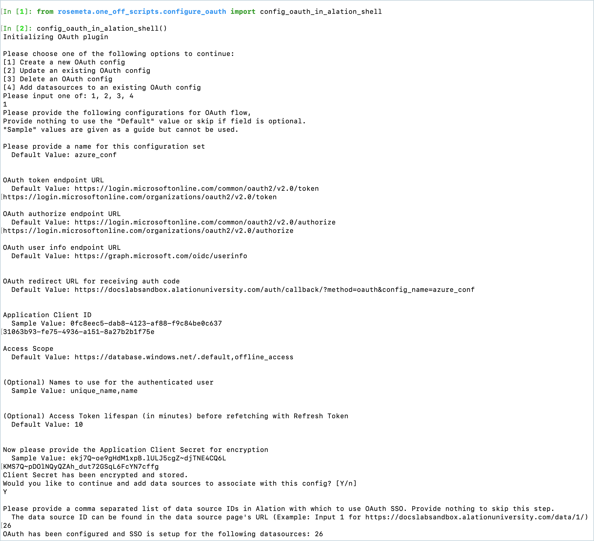
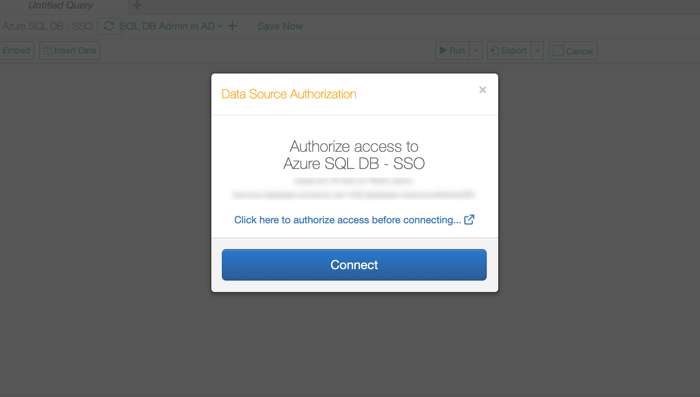
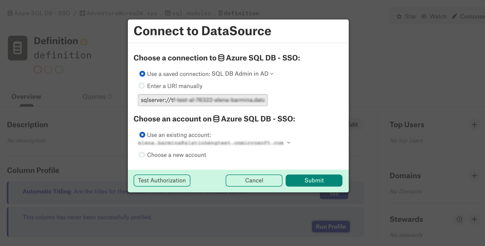
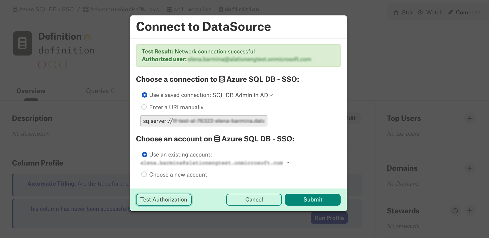

Compose SSO for Azure Data Sources: Configure Compose SSO in Alation¶
Available from version 2021.4
Compose SSO for Azure SQL data sources uses the OAuth plug-in of Alation’s AuthService and requires the AuthService to be enabled on your Alation server.
Prerequisites¶
Before performing this configuration:
Make sure you have registered Compose with Azure AD: Compose SSO for Azure Data Sources: Register an Application in Azure AD.
Make sure you have the required Azure AD information at hand:
The client ID of the Compose application registration in Azure AD
Application client secret value
OAuth 2.0 endpoints
OAuth token endpoint URL
OAuth authorize endpoint URL
Prepare the Alation IDs of the data sources for which you are configuring Compose SSO. See How to Find Data Source ID for details.
STEP 1: Enable AuthService¶
Note
Enabling of AuthService requires a redeployment of alation_conf and a restart of the Alation server. Alation recommends to schedule this configuration at a time when users are the least active in the Catalog. A redeployment of alation_conf and a restart will cause the Alation user interface to reload and users may lose their unsaved work.
From version 2022.2, AuthService is enabled by default. In versions before 2022.2, perform the following configuration on the Alation server to enable AuthService:
Use SSH to connect to your Alation host.
Enter the Alation shell.
sudo /etc/init.d/alation shell
Check if the AuthService is enabled on your instance by checking the current value of the alation_conf parameter
alation.authentication.service.enabled.alation_conf alation.authentication.service.enabledIf the current value is
True, the AuthService is already enabled. If it’sFalse, then change the value toTrue.Set the value to
True.alation_conf alation.authentication.service.enabled -s True
Deploy the configuration.
alation_action deploy_conf_allRestart Alation.
alation_action restart_alation
Stay in the Alation shell.
STEP 2: Configure the AuthService OAuth Plug-in¶
From the Alation shell, enter the Django shell:
alation_django_shell
From the Django shell, initiate the OAuth plug-in configuration script by using the following commands:
from rosemeta.one_off_scripts.configure_oauth import config_oauth_in_alation_shell config_oauth_in_alation_shell()
This script will guide you through the configuration of every OAuth plug-in parameter. You will need to enter the information you collected from Azure AD. Refer to the table OAuth Configuration Properties below for descriptions of the properties that are configured with this script.
To apply a default value and move to the next prompt, press Enter.
Note that some prompts offer sample values. Sample values are examples of what a value should look like, but they cannot be applied as they are not equal to the default values. Provide your own values in place of sample values.
Important
During configuration, you will be required to specify a name for the OAuth configuration object (or use the default value of
azure_conf). Save the name you use. It will be required if you need to perform any of the supported CRUD operations on this configuration object later.
See an example of script usage below. After you move through all the steps in the configuration script, the SSO configuration is complete and you can test it in Alation.

OAuth Configuration Properties¶
Prompt |
Corresponding property in AuthService |
Description |
|---|---|---|
Please provide a name for this configuration set |
config_name |
Name (string) representing this OAuth configuration. The name can be any string; however, it cannot be an existing name that was already used for another Auth Server plugin. Default: |
OAuth token endpoint URL |
token_endpoint |
The token endpoint URL in the standard OAuth flow. The auth
code received from the authorize_endpoint is passed to the
Example:
|
OAuth authorize endpoint URL |
authorize_endpoint |
The authorization endpoint URL in the standard OAuth flow
used to authorize a user principal. In Azure AD, if the app
is registered as multi-tenant, Example:
|
OAuth user info endpoint URL |
user_info_endpoint |
The user info endpoint in the standard OAuth flow. For Azure
cloud, it is the following value:
|
OAuth redirect URL for receiving auth code |
redirect_url |
The URL within Alation to accept the auth code from the OAuth provider (in this case Azure). Example:
|
Application Client ID |
client_id |
Client ID of the application registered in Azure AD to represent Alation. |
Access Scope |
scope |
The access scopes associated with the tokens. These scopes will
be presented to the user for approval when redirected to the OAuth
provider. The following scopes are the minimum required
for Compose, representing user-impersonation and access to a
refresh token:
|
(Optional) Names to use for the authenticated user |
subject |
JWT token field that identifies the user principal authenticated. This field value is used to display the user session in Compose. This is an optional field that is not required to be provided when creating the configuration. Only use this configuration if the user info that is identified in the JWT token uses any other key. Default: |
(Optional) Access Token lifespan (in minutes) before refetching with Refresh Token |
token_buffer_time |
Buffer time to calculate if a new access token needs to be generated or not. Default: 10 (min) Example: If lifetime of a token is 60 min and Alation acquired the token at 1:00 PM (UTC), Alation will reuse the same token till 1:50 PM (UTC) even though the token is valid for 60 min. Then, a new token will be generated if request comes at 1:51 PM (UTC). |
Now please provide the Application Client Secret for encryption |
n/a |
The client secret for the Azure app representing Compose. Alation will store the client secret in the encrypted format. |
Please provide a comma separated list of data source IDs in Alation with which to use OAuth SSO. |
n/a |
Alation IDs of the data sources which are going to use OAuth with Azure AD in Compose and for Dynamic Profiling. |
Test the Configuration¶
To test your SSO setup:
Log in to Alation as a user who should be able to query an Azure data source from Compose.
From your Azure data source, go to Compose and establish a new connection. Instead of the Username and Password fields, the Data Source Authorization dialog should display the link Click here to authorize access before connecting…
Click the authorization link. The Azure AD login screen should open in a new browser tab.
Log in with your Azure AD credentials. After a successful login, the connection should be successfully established and you should be able to run queries in Compose.
Note that with Compose SSO set up for your Azure data source, Dynamic Profiling will also require that users log in with their Azure AD credentials. When running a column profile, in the Connect to Data Source dialog, choose your SSO account and click Test Authorization:

After authenticating with Azure AD, you will be able to submit your query by clicking Submit:

Compose SSO and Scheduled Queries¶
With Compose SSO set up for an Azure data source, users are able to schedule published queries in Compose. Scheduled queries use the same OAuth flow as unscheduled Compose queries where Alation uses an existing access token to authorize Compose to use the data source. When it expires, Alation automatically requests a new access token using the previously acquired refresh token if the same session is maintained.
If users notice that their scheduled query failed, this may mean that the refresh token has expired. They need to go to Compose and re-authenticate with their Azure AD credentials in order to renew OAuth tokens.
Troubleshooting Compose SSO with Azure AD¶
Error |
Use Case |
Solutions |
|---|---|---|
{“message”: “failed to connect to all addresses: <…>} |
AuthServer is not running so GRPC calls fail |
Restart the web services or restart the Alation server. To restart the web services: alation_supervisor start java:authserver
alation_supervisor restart web:*
Or to restart Alation: alation_action restart_alation
|
Login failed for user ‘<token-identified principal>’ |
Azure AD authentication is successful, but authorization for the subject (user) failed because the user does not have access to the data source. |
In Azure Portal, verify that the user can access the resource with correct permissions. |
Authorization terminated unexpectedly. |
The user did not go through the Azure redirect. This may happen if the browser tab was closed before before Alation cloud receive a response from Azure AD. |
Try again by clicking Click here to authorize access before connecting… |
Test Result: Error verifying credentials. Please check your username and password. |
Azure AD authentication is successful, but authorization for the subject (user) failed because the user does not have access to the data source. |
In the Azure Portal, verify that the user can access the resource with correct permissions. |